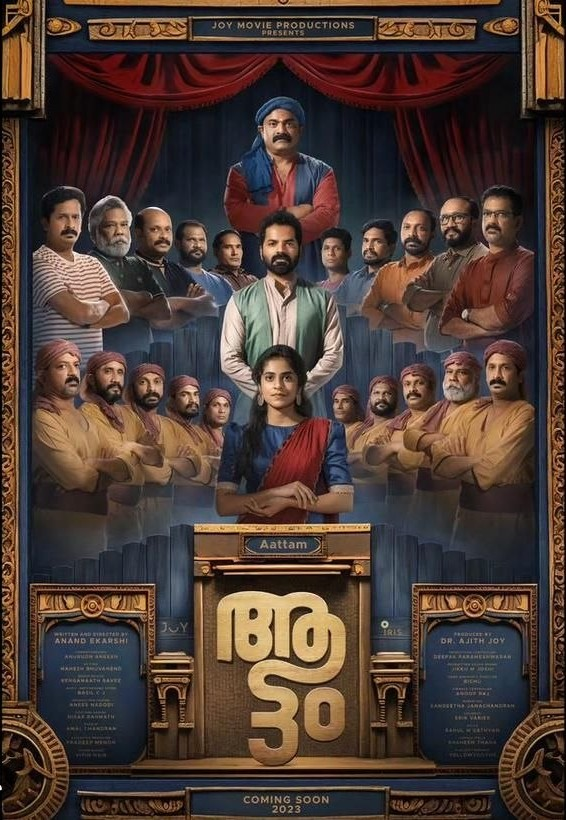

Director: ക്രിസ്റ്റഫർ നോളൻ
Review by: ഷിജിൽ എം പി
നിങ്ങളുടെ സുഹൃത് വലയത്തിൽ അല്ലെങ്കിൽ ഓഫീസിൽ ഒരു പെൺസുഹൃത്തിന് അല്ലെങ്കിൽ സഹപ്രവർത്തകയ്ക്ക് എതിരെ അതേ ഗ്രൂപ്പിൽ നിന്നുള്ള ഒരാൾ ഒരതിക്രമംകാട്ടിയാൽ ആ സംഭവത്തോടുള്ള നിങ്ങളുടെ നിലപാട് എന്തായിരിക്കും? അതിക്രമംകാട്ടിയ ആൾക്കെതിരെ നിങ്ങൾ ശക്തമായി നിലകൊള്ളുമോ? അതോ, പീഡിതയായ, അല്ലെങ്കിൽ കുറ്റാരോപിതനായ വ്യക്തിയോടുള്ള നിങ്ങളുടെ ദീർഘകാലത്തെ സൗഹൃദമോ അല്ലെങ്കിൽ അവരോടുള്ള വിദ്വേഷമോ നിങ്ങളുടെ നിലപാടിനെ സ്വാധീനിക്കുമോ? അതു പോലെ തന്നെ ഇതേ ഗ്രൂപ്പിൽ തന്നെയുള്ള മറ്റുള്ളവരുടെ നിലപാടുകൾ എന്തായിരിക്കും?
ഓരോരുത്തരും വളർന്നുവന്ന സാമൂഹിക സാഹചര്യം, തങ്ങൾ ജീവിക്കുന്ന സാമ്പത്തിക സാഹചര്യം, തങ്ങൾക്കുള്ളിലെ പുരുഷാധിപത്യം, സഹാനുഭൂതിയുടെ അളവ് തുടങ്ങിയ ഓരോ ഘടകങ്ങളും അതിന്റേതായ സ്വാധീനം അവരിലോരോരുത്തരിലും ചെലുത്തുന്നുണ്ട്.
ഇത്തരം ഒരു നാടകീയമായ സന്ദർഭത്തിൽ സംവാദവും യോജിപ്പും വിയോജിപ്പും കൊണ്ട് മാറിമറയുന്ന നിലപാടുകളുടെ കഥയാണ് കേരളത്തിലെ 28-ാമത് അന്താരാഷ്ട്ര ചലച്ചിത്രോത്സവത്തിൽ (IFFK) അടുത്തിടെ പ്രദർശിപ്പിച്ച, ഇക്കഴിഞ്ഞ ദിവസം തിയറ്ററിൽ റിലീസ് ചെയ്ത ആനന്ദ് ഏകർഷിയുടെ 'ആട്ടം' എന്ന സിനിമ പറയുന്നത്.
ആട്ടം ഒരു സിനിമ മാത്രമല്ല. ഒരു സിനിമക്കുള്ളിലെ നാടകം കൂടിയാണ്. അതുമല്ലെങ്കിൽ ഒരേ സമയം സിനിമയും നാടകവുമാണെന്നും പറയാം. നിലപാടുകൾ എടുക്കുകയും അവനവന്റെ സൗകര്യത്തെ അടിസ്ഥാനമാക്കി ആ നിലപാടുകളെമാറ്റി കളയുകയും ചെയ്യുന്ന 12 മനുഷ്യരിലൂടെയാണ് ആട്ടം സഞ്ചരിക്കുന്നത്.
ശരിയായ കാസ്റ്റിംഗ് തന്നെയാണ് ആട്ടത്തിന്റെ ഏറ്റവും വലിയ മികവ്. മലയാളത്തിൽ റിലീസ് ചെയ്ത 1001 നുണകൾ എന്ന സിനിമയ്ക്ക് ശേഷം, പുതുമുഖ അഭിനേതാക്കൾ തങ്ങളുടെ കഴിവുകൊണ്ട് പ്രേക്ഷകരെ പിടിച്ചിരുത്തിയ മറ്റൊരു സിനിമയാണ് ആട്ടം. വളരെയധികം സിനിമാറ്റിക്കായ, സസ്പെൻസ് ഡ്രാമ ഗണത്തിൽ പെടുന്ന ചിത്രം പ്രേക്ഷകരെ ആകാംക്ഷയുടെ മുൾമുനയിൽ നിർത്തുന്നുമുണ്ട്.
ആട്ടം ഇപ്പോൾ ആമസോൺ പ്രൈമിൽ കാണാം.